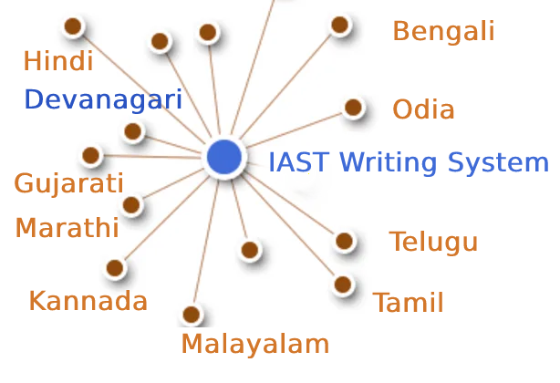

IastFramework
Table of Contents

pip webpage: https://test.pypi.org/project/IastFramework/
pip install -i https://test.pypi.org/simple/ IastFramework \\ pip install IastFramework
pip description: https://test.pypi.org/project/IastFramework/
POC: https://github.com/dankarthik25/Iast-Framework
Google Doc:
- A Generalized NLP FrameWork for Indic Languages
- My Journey to Sanskrit Dictionary and Youtube Channel
- Scope of Sanskrit in NLP
Summary
IAST FrameWork is a NLP FrameWork build specifically for Indic Languages/Scripts
Where IAST Script [lossless romanisation of Indic scripts to Latin script is used as base for all Indic Languages
IAST FrameWork consist of
- Lossless convertion of Indic Languages (Hindi, Gujarathi, Malayalam , Kannada, Telugu, Tamil, Odia, Bengali ) into IAST Script
iast.to_iast(indic_script) - Convert IAST Script to Indic Languages (Hindi, Malyalam, Kannada, Telugu)
iast.iast2indic(iast_script,indic_lang)
for Tamil, Odia, Bengali, Gujarathi in progress - Use IAST Char as Phonetic Hash for Phonetic Based Search Algorithm
IAST.basic_hashandIAST.normal_hash - Using IAST Phonetic Hash for Search Algorithm
Future Scope
- Creating and Linking Indic Language OpenSource Dictionary Olam, Alar dictionary, Monier Williams Sanskrit Dictionary github PyCDSL GNU Licence v3 …etc
linking dictionary either by it
- pronunciation (phonetic hash) or
- by it meaning.
- Steam word and Lemmatization word in both lanaguages
- Using IAST as writing system: Creating Steamming and Lemmatization library for (Common Words) in all Indic languages.<br> Most of Indic Language word has (common words) most of them are derived from sanskrit
- Creating OpenSouce DataSet of common Indic Language NER Library simillar to Stanfordnlp/CoreNLP using
OpenSource Tools:
https://github.com/prasadchandan/st_ner_annotate
https://github.com/explosion/spacy-streamlit

- Using IAST as Language as basis for NLU Natural Language Understanding for all Indic language.
Simillar Rules,Grammer can be group
Advatages of IAST: Suppose if we develop OpenSource NLU for ( Kannada or Malayalam) then due to IAST writing system the logic can be easily understanded by other Indic User like (Tamil, Telug, Hindi)…etc
This will help other Indic Language NLP developer to understand and develop NLP for there Indic Language. - Using IAST as Language as basis for NLG Natural Language Generation for all Indic language.
IAST
IAST: International Alphabet of Sanskrit Transliteration is a transliteration scheme that allows the lossless romanisation of Indic scripts as employed by Sanskrit and related Indic languages.
ISO 15919 published in 2001 and uses diacritics to map the much larger set of consonants and vowels in Brahmic and Nastaliq scripts to the Latin script.
Here is the table which is used in the code to link different Indic Scripts https://docs.google.com/spreadsheets/d/1wS98RWxqCQOCoR2H-E9kW0FUXC_Kvqoiz6NzSB2Fdto/
Installation
pip install -i https://test.pypi.org/simple/ IastFramework # working link pip install IastFramework # underdevelopmenet
import sqlite3 import sys import os #from IAST import IAST from IastFramework import IAST iast = IAST()
# for custom mapping db_path = 'iast-token.db' table_name_alpha= 'IndianAlphabet' table_name_barakadi= 'Barakhadi' iast = IAST(db_path,table_name_alpha,table_name_barakadi)
Convert Indic Language to IAST
Convert hindi, Bengali,Gujarati, Kannadam Odia, Tamil, Telugu to `iast` format
SQL query to search Indic Character in all Lanaguages
SELECT * FROM IndianAlphabet WHERE Devanagari == 'ध' OR Bengali–Assamese == 'ध' OR Gujarati == 'ध' OR Kannada == 'ध' OR Malayalam == 'ध' OR Odia == 'ध' OR Tamil == 'ध' OR Telugu == 'ध';
[{'type': 'consonants',
'IAST': 'dha',
'Devanagari': 'ध',
'Bengali–Assamese': 'ধ',
'Gujarati': 'ધ',
'Gurmukhi': 'ਧ',
'Kannada': 'ಧ',
'Malayalam': 'ധ',
'Nastaliq': 'دھ',
'Odia': 'ଧ',
'Sinhala': 'ධ',
'Tamil': None,
'Telugu': 'ధ'}]
print(iast.alphabet) # IndianAlphabet print(iast.barakhadi) # Barakhadi query = IAST.get_iast_idx_query('ध',iast.alphabet) # print(query.replace('\n','').replace(" ","").replace('OR',' OR')) # print() iast.get_query(query) # [{'IAST': 'dha', 'Devanagari': 'ध', 'Bengali–Assamese': 'ধ', 'Gujarati': 'ધ', 'Gurmukhi': 'ਧ', 'Kannada': 'ಧ', 'Malayalam': 'ധ', 'Nastaliq': 'دھ', 'Odia': 'ଧ', 'Sinhala': 'ධ', 'Tamil': None, 'Telugu': 'ధ'}]
IndianAlphabet
Barakhadi
SELECT * FROM IndianAlphabet WHERE Devanagari == 'ध' OR Bengali–Assamese == 'ध' OR Gujarati == 'ध' OR Kannada == 'ध' OR Malayalam == 'ध' OR Odia == 'ध' OR Tamil == 'ध' OR Telugu == 'ध';
[{'type': 'consonants',
'IAST': 'dha',
'Devanagari': 'ध',
'Bengali–Assamese': 'ধ',
'Gujarati': 'ધ',
'Gurmukhi': 'ਧ',
'Kannada': 'ಧ',
'Malayalam': 'ധ',
'Nastaliq': 'دھ',
'Odia': 'ଧ',
'Sinhala': 'ධ',
'Tamil': None,
'Telugu': 'ధ'}]
print(iast.get_halant_list()) #>> ['्', '্', '્', '್', '്', '୍', '్'] print(iast.('ధృత్రాష్ట్ర ఉవాచ'))
# iast.halant_list ['्', '্', '્', '್', '്', '୍', '్'] dhr̥trāṣṭra uvāca